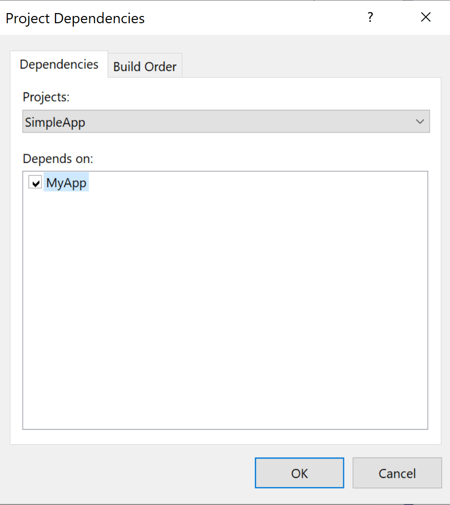
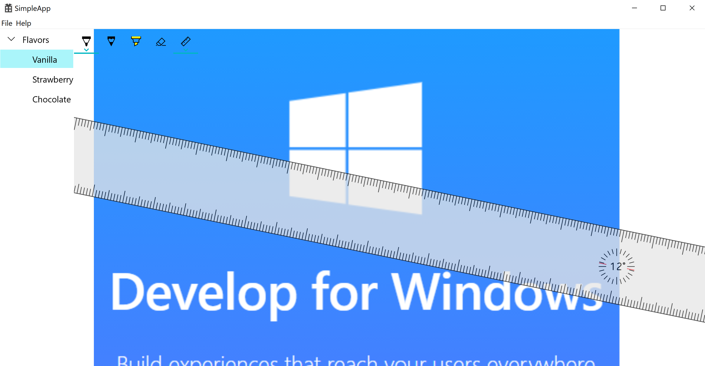

Host Custom UWP Controls in C++ Win32 Project using XAML Islands
This article explains how to modernize C++ Win32 project with custom UWP Controls through XAML Islands in detail. With custom UWP controls, it allows us to define control layout easily through XAML pages. Not only putting standard UWP controls into the custom control, we can also integrate other custom controls as well, such as latest WinUI controls. We will use a new Xaml Application project to bring the custom UWP controls into our C++ Win32 project. This article has mentioned how to use the new XAML application in Win32 C++ application, we will give more detailed steps.
Overall, in our solution, we will have two parts to demonstrate this method:
C++ Win32 Project
A companion UWP app project that defines a XamlApplication object.
In this project, we will define a custom UWP control and export it so that C++ Win32 can use the custom UWP control.
Development Environment
- Visual Studio 2019 (16.3.6)
- Windows 10 1909 (18363.476)
- Windows 10 SDK (10.0.18362.1)
Create C++ Win32 in Visual Studio 2019, will name it SimpleApp

In Solution Explorer, right-click the Simple project node, click Retarget Project, select the 10.0.18362.0 or a later SDK release, and then click OK.


Install the Microsoft.Windows.CppWinRT NuGet package:
Right-click the project in Solution Explorer and choose Manage NuGet Packages.
Select the Browse tab, search for the Microsoft.Windows.CppWinRT package, and install the latest version of this package.

After install the nuget package, check the SimpleApp project properties, you will notice its C++ version is ISO C++17, which is required by C++/WinRT:

Build this SimpleApp, we can see winrt projected files are generated in the “Generated Files” folder:

Install the Microsoft.Toolkit.Win32.UI.SDK NuGet package:
- In the NuGet Package Manager window, make sure that Include prerelease is selected.
- Select the Browse tab, search for the Microsoft.Toolkit.Win32.UI.SDK package, and install version v6.0.0 (or Later) of this package.

Install the Microsoft.VCRTForwarders.140 nuget package as well. Running Custom UWP Control in this project will require VC libs.

In Solution Explorer, right-click the solution node and select Add -> New Project.
Add a Blank App (C++/WinRT) project to your solution.

Give it a name MyApp, and create it, Make sure the target version and minimum version are both set to Windows 10, version 1903 or later.

Right click the MyApp and open its properties, make sure its C++/WinRT configuration is as below:

Change its output type from .EXE to Dynamic Library

Save a dummy.exe into the MyApp folder. It doesn’t need to be a real exe, just input “dummy exe file” in notepad, and save it as dummy.exe.


Add the dummy.exe into MyApp project, and make sure the Content property of dummy.exe is True.

Now edit Package.appxmanifest, change the Executable attribute to “dummy.exe”

Right click the MyApp project, select Unload Project
Right click the MyApp (Unloaded) project, select Edit MyApp.vcxproj
Add below properties to the MyApp.vcxproj project file:
<PropertyGroup Label="Globals">
<WindowsAppContainer>true</WindowsAppContainer>
<AppxGeneratePriEnabled>true</AppxGeneratePriEnabled>
<ProjectPriIndexName>App</ProjectPriIndexName>
<AppxPackage>true</AppxPackage>
</PropertyGroup>
For example:

Right click the MyApp (Unloaded) project, select Reload Project.
Right click Mainpage.xml, select Remove. And then click Delete

Copy App.Xaml, App.cpp, App.h, App.idl contents to overwrite current ones:
App.Xaml
<Toolkit:XamlApplication
x:Class="MyApp.App"
xmlns="http://schemas.microsoft.com/winfx/2006/xaml/presentation"
xmlns:x="http://schemas.microsoft.com/winfx/2006/xaml"
xmlns:local="using:MyApp"
xmlns:Toolkit="using:Microsoft.Toolkit.Win32.UI.XamlHost"
xmlns:d="http://schemas.microsoft.com/expression/blend/2008"
xmlns:mc="http://schemas.openxmlformats.org/markup-compatibility/2006"
RequestedTheme="Light"
mc:Ignorable="d">
</Toolkit:XamlApplication>
App.cpp
#include "pch.h"
#include "App.h"
using namespace winrt;
using namespace Windows::UI::Xaml;
namespace winrt::MyApp::implementation
{
App::App()
{
Initialize();
AddRef();
m_inner.as<::IUnknown>()->Release();
}
App::~App()
{
Close();
}
}
App.h
//
// Declaration of the App class.
//
#pragma once
#include "App.g.h"
#include "App.base.h"
namespace winrt::MyApp::implementation
{
class App : public AppT2<App>
{
public:
App();
~App();
};
}
namespace winrt::MyApp::factory_implementation
{
class App : public AppT<App, implementation::App>
{
};
}
App.idl
namespace MyApp
{
[default_interface]
runtimeclass App: Microsoft.Toolkit.Win32.UI.XamlHost.XamlApplication
{
App();
}
}
Create app.base.h in this MyApp project, and use below content:
app.base.h
#pragma once
namespace winrt::MyApp::implementation
{
template <typename D, typename... I>
struct App_baseWithProvider : public App_base<D, ::winrt::Windows::UI::Xaml::Markup::IXamlMetadataProvider>
{
using IXamlType = ::winrt::Windows::UI::Xaml::Markup::IXamlType;
IXamlType GetXamlType(::winrt::Windows::UI::Xaml::Interop::TypeName const& type)
{
return AppProvider()->GetXamlType(type);
}
IXamlType GetXamlType(::winrt::hstring const& fullName)
{
return AppProvider()->GetXamlType(fullName);
}
::winrt::com_array<::winrt::Windows::UI::Xaml::Markup::XmlnsDefinition> GetXmlnsDefinitions()
{
return AppProvider()->GetXmlnsDefinitions();
}
private:
bool _contentLoaded{ false };
std::shared_ptr<XamlMetaDataProvider> _appProvider;
std::shared_ptr<XamlMetaDataProvider> AppProvider()
{
if (!_appProvider)
{
_appProvider = std::make_shared<XamlMetaDataProvider>();
}
return _appProvider;
}
};
template <typename D, typename... I>
using AppT2 = App_baseWithProvider<D, I...>;
}
Install Microsoft.Toolkit.Win32.UI.XamlApplication Nuget package.
If you build MyApp now, it should create MyApp.dll without any error.
This step is necessary for our next steps because we need to include winrt header files in different projects properly, and MFCApp also needs to reference MyApp resource files.
Add a new Solution.Props file by right clicking the solution node, and select Add -> New Item:

Use below content to overwrite the Solution.Props:
<?xml version="1.0" encoding="utf-8"?>
<Project xmlns="http://schemas.microsoft.com/developer/msbuild/2003">
<PropertyGroup>
<IntDir>$(SolutionDir)\obj\$(Platform)\$(Configuration)\$(MSBuildProjectName)\</IntDir>
<OutDir>$(SolutionDir)\bin\$(Platform)\$(Configuration)\$(MSBuildProjectName)\</OutDir>
<GeneratedFilesDir>$(IntDir)Generated Files\</GeneratedFilesDir>
</PropertyGroup>
</Project>
Click Views -> Other Windows -> Property Manager

Right click SimpleApp, select Add Existing Property Sheet, add the new solution.props file

Repeat the step 4. for MyApp. We can close the Property Manager window now.
Right click the project node MFCApp, select Properties.
If you see the Outut and Intermidiate directries are already become as below, then can skip this step:
$(SolutionDir)$(Platform)$(Configuration)$(MSBuildProjectName)
and $(SolutionDir)$(Platform)$(Configuration)$(MSBuildProjectName)
Otherwise please manually set：
Output Directory: $(OutDir)
Intermidia Directory: $(IntDir)

Repeat the step 6 for MyApp.
Right click the Solution node, and choose Project Dependencies, make sure SimpleApp depends on MyApp:

Rebuild the whole solution, it should work without errors.
Add UWP Custom XAML Control to MyApp
Right click MyApp, select Add -> New Item
Create Blank User Conrol (C++/WinRT), here we call it MainUserControl:

Integrate Custom XAML Control in SimpleApp
Add one XML file app.manifest in your project with below content to register custom control type:
<?xml version="1.0" encoding="utf-8" standalone="yes"?>
<assembly
xmlns="urn:schemas-microsoft-com:asm.v1"
xmlns:asmv3="urn:schemas-microsoft-com:asm.v3"
manifestVersion="1.0">
<asmv3:file name="MyApp.dll">
<activatableClass
name="MyApp.App"
threadingModel="both"
xmlns="urn:schemas-microsoft-com:winrt.v1" />
<activatableClass
name="MyApp.XamlMetadataProvider"
threadingModel="both"
xmlns="urn:schemas-microsoft-com:winrt.v1" />
<activatableClass
name="MyApp.MainUserControl"
threadingModel="both"
xmlns="urn:schemas-microsoft-com:winrt.v1" />
</asmv3:file>
</assembly>
Now the project structure is like as below:

Right click the Win32 Project SimpleApp, select Unload Project
Right click the SimpleApp (Unloaded) project, select Edit SimpleApp.vcxproj
Remove the three lines from the SimpleApp.vcxproj project file:
<ItemGroup>
<Manifest Include="app.manifest" />
</ItemGroup>
Add below properties to the SimpleApp.vcxproj project file before the “<Import Project=”“$(VCTargetsPath).Cpp.targets” />" line:
<ItemGroup>
<Manifest Include="app.manifest" />
<AppxManifest Include="$(SolutionDir)\bin\$(Platform)\$(Configuration)\$(AppProjectName)\AppxManifest.xml" />
</ItemGroup>
<PropertyGroup>
<AppProjectName>MyApp</AppProjectName>
</PropertyGroup>
<PropertyGroup>
<AppIncludeDirectories>$(SolutionDir)\obj\$(Platform)\$(Configuration)\$(AppProjectName)\;$(SolutionDir)\obj\$(Platform)\$(Configuration)\$(AppProjectName)\Generated Files\;</AppIncludeDirectories>
</PropertyGroup>
<ItemGroup>
<NativeReferenceFile Include="$(SolutionDir)\bin\$(Platform)\$(Configuration)\$(AppProjectName)\*.xbf">
<DeploymentContent>true</DeploymentContent>
<CopyToOutputDirectory>PreserveNewest</CopyToOutputDirectory>
</NativeReferenceFile>
<NativeReferenceFile Include="$(SolutionDir)\bin\$(Platform)\$(Configuration)\$(AppProjectName)\*.dll">
<DeploymentContent>true</DeploymentContent>
<CopyToOutputDirectory>PreserveNewest</CopyToOutputDirectory>
</NativeReferenceFile>
<NativeReferenceFile Include="$(SolutionDir)\bin\$(Platform)\$(Configuration)\$(AppProjectName)\resources.pri">
<DeploymentContent>true</DeploymentContent>
<CopyToOutputDirectory>PreserveNewest</CopyToOutputDirectory>
</NativeReferenceFile>
</ItemGroup>
<------Right Here--------->
<Import Project="$(VCTargetsPath)\Microsoft.Cpp.targets" />
Right click the SimpleApp (Unloaded) project, select Reload Project.
Right click SimpleApp, select Properties, setup $(AppIncludeDirectories) as a part of include file path, this macro has been defined in the above project file:

Set “Per Monitor DPI Aware” for DPI Awareness otherwise you may be not able to start this SimpleApp when it is “High DPI Aware” and hit configuration error in Manifest:


Open framework.h, remove this #define:
#define WIN32_LEAN_AND_MEAN
In SimpleApp.h, add below code to include necessary winrt header files:
#include <winrt/Windows.Foundation.Collections.h>
#include <winrt/Windows.system.h>
#include <winrt/windows.ui.xaml.hosting.h>
#include <windows.ui.xaml.hosting.desktopwindowxamlsource.h>
#include <winrt/windows.ui.xaml.controls.h>
#include <winrt/Windows.ui.xaml.media.h>
#include <winrt/Windows.UI.Core.h>
#include <winrt/myapp.h>
Using winrt namespaces in SimpleAPP.cpp
using namespace winrt;
using namespace Windows::UI;
using namespace Windows::UI::Composition;
using namespace Windows::UI::Xaml::Hosting;
using namespace Windows::Foundation::Numerics;
using namespace Windows::UI::Xaml::Controls;
Declare hostApp, _desktopWindowXamlSource and our custom control in SimpleApp.cpp
UNREFERENCED_PARAMETER(hPrevInstance);
UNREFERENCED_PARAMETER(lpCmdLine);
// TODO: Place code here.
winrt::init_apartment(winrt::apartment_type::single_threaded);
hostApp = winrt::MyApp::App{};
_desktopWindowXamlSource = winrt::Windows::UI::Xaml::Hosting::DesktopWindowXamlSource{};
Initalize hostApp, _desktopWindowXamlSource in wWinMain in SimpleApp.CPP
winrt::init_apartment(winrt::apartment_type::single_threaded);
hostApp = winrt::MyApp::App{};
_desktopWindowXamlSource = winrt::Windows::UI::Xaml::Hosting::DesktopWindowXamlSource{};
Add below code in InitInstance in SimpleApp.cpp
if (_desktopWindowXamlSource != nullptr)
{
// Get handle to corewindow
auto interop = _desktopWindowXamlSource.as<IDesktopWindowXamlSourceNative>();
// Parent the DesktopWindowXamlSource object to current window
check_hresult(interop->AttachToWindow(hWnd));
// This Hwnd will be the window handler for the Xaml Island: A child window that contains Xaml.
HWND hWndXamlIsland = nullptr;
// Get the new child window's hwnd
interop->get_WindowHandle(&hWndXamlIsland);
RECT windowRect;
::GetWindowRect(hWnd, &windowRect);
::SetWindowPos(hWndXamlIsland, NULL, 0, 0, windowRect.right - windowRect.left, windowRect.bottom - windowRect.top, SWP_SHOWWINDOW);
_mainUserControl = winrt::MyApp::MainUserControl();
_desktopWindowXamlSource.Content(_mainUserControl);
}
ShowWindow(hWnd, nCmdShow);
UpdateWindow(hWnd);
Clean up resources when the view is disconstructed in MFCAppView.cpp
case WM_DESTROY:
PostQuitMessage(0);
if (_desktopWindowXamlSource != nullptr)
{
_desktopWindowXamlSource.Close();
_desktopWindowXamlSource = nullptr;
}
break;
Add AdjustLayout function to make XAML content layout properly in SimpleApp.cpp :
void AdjustLayout(HWND hWnd)
{
if (_desktopWindowXamlSource != nullptr)
{
auto interop = _desktopWindowXamlSource.as<IDesktopWindowXamlSourceNative>();
HWND xamlHostHwnd = NULL;
check_hresult(interop->get_WindowHandle(&xamlHostHwnd));
RECT windowRect;
::GetWindowRect(hWnd, &windowRect);
::SetWindowPos(xamlHostHwnd, NULL, 0, 0, windowRect.right - windowRect.left, windowRect.bottom - windowRect.top, SWP_SHOWWINDOW);
}
}
In SimpleApp.CPP handle WM_SIZE in the WinProc function: C++ case WM_SIZE: AdjustLayout(hWnd);
Now you can build and run this SimpleApp. It should display a button in the central of view window:

Using Ink Control in MyApp UWP Project
Add an Assets file folder under SimpleApp on file system, add viewbackground.png file. And then create a new filter of “Assets”, add this existing viewbackground.png into the Assets filter:
Set the file’s Content property as True

If you cannot see the viewbackground.png file, please click the “Show All Files” tool icon in the solution explorer window.
Add the sample png file into Assets folder of MyApp, and make its Content property as True as well.
Modify MainUserControl.Xaml as below in MyApp:
<UserControl
x:Class="MyApp.MainUserControl"
xmlns="http://schemas.microsoft.com/winfx/2006/xaml/presentation"
xmlns:x="http://schemas.microsoft.com/winfx/2006/xaml"
xmlns:local="using:MyApp"
xmlns:d="http://schemas.microsoft.com/expression/blend/2008"
xmlns:mc="http://schemas.openxmlformats.org/markup-compatibility/2006"
mc:Ignorable="d">
<RelativePanel HorizontalAlignment="Stretch" VerticalAlignment="Stretch">
<Image Source="assets/viewbackground.png" RelativePanel.AlignLeftWithPanel="True"
RelativePanel.AlignRightWithPanel="True"
RelativePanel.AlignHorizontalCenterWithPanel="True"></Image>
<InkCanvas x:Name="ic" RelativePanel.AlignLeftWithPanel="True"
RelativePanel.AlignRightWithPanel="True"
RelativePanel.AlignBottomWithPanel="True"
RelativePanel.AlignTopWithPanel="True"></InkCanvas>
<InkToolbar x:Name="it" HorizontalAlignment="Left" VerticalAlignment="Top"></InkToolbar>
</RelativePanel>
</UserControl>
Add below code in MainUserControl.CPP, remove the Button ClickHandler code as we don’t use it now:
MainUserControl::MainUserControl()
{
InitializeComponent();
ic().InkPresenter().InputDeviceTypes((winrt::Windows::UI::Core::CoreInputDeviceTypes)7);
it().TargetInkCanvas(ic());
}
Include more winrt header files in MainUserControl.h:
#include <winrt/Windows.UI.Input.Inking.h>
#include <winrt/Windows.UI.Xaml.Media.Imaging.h>
Build and run Simple, if steps have been taken exactly as above, it will show as below:

You may notice that it doesn’t display the background image, this is because the uri assets/viewbackground.png needs to be used UWP package. In Visual Studio, with “Windows Application Packaging Project (C++)”, it is easily to packaging our SimpleApp project:

Create the packaging project in the solution, right click the Application node, and select Add Reference, add SimpleApp. Now the packaging project structure is like:

For more information about packaging project, refer to: Package a desktop app from source code using Visual Studio
After this, choose the packaging project as Start Up project, Ctrl+F5 to run it. We can see the expected result will show up:

Further more, you can publish this packaging app as MSIX or APPX, and easily deploy it:
Package a UWP app with Visual Studio
Wrap Up
This article gives detailed steps on how to leverage XamplApplication to host standard XAML control in C++ Win32 project, with this method, it is flexible to leverage Win10 Controls in Win32 project. The whole sample solution can be found from this repo: https://github.com/freistli/ModernizeApp/tree/master/C%2B%2B/SimpleApp
Further Step
To use WinUI 2.x, you can refer to this part and embedded it in your C++ project. The sample solution is also ready from this repo: https://github.com/freistli/ModernizeApp/tree/master/C%2B%2B/SimpleAppWithWinUI/SimpleApp. Its left TreeView is from WinUI 2.4 prerelease:
